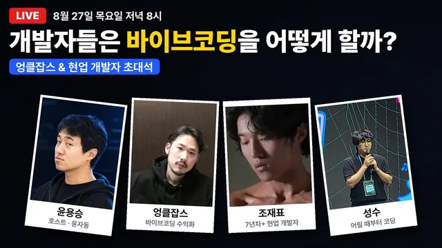

엉클잡스 & 현업 개발자 초대석, 바이브코딩 실무에선 진짜? | 윤자동 라이브

원본 영상 보기 →
- 현업의 바이브코딩은 "코드를 안 읽되 로직은 이해한다"이고, 검증 책임은 결국 만든 사람에게 남아요
- 모델은 "제일 센 것 하나"가 아니라 역할별로 쪼개 쓰는 것이고, 최상위 모델 의존은 그 자체가 리스크예요
- 자동화와 수익화의 병목은 기술이 아니라 사람이에요
한 줄 요약
채널 운영자 윤자동과 커뮤니티 '강북 에르메스단'을 이끄는 엉클잡스가, 현업 개발자이자 오픈소스 코딩 도구 메인테이너인 조제표(가제코드)와 박성수(오마이 오픈 에이전트)를 불러 5시간 동안 "바이브코딩이 실무에서 진짜 통하는가"를 파헤친 라이브예요. 현업 개발자가 AI가 쓴 코드를 어떻게 다루는지, 모델 20종을 용도별로 어떻게 나눠 쓰는지, 자동화와 수익화의 진짜 병목이 무엇인지가 핵심입니다.
전체 내용 정리
현업 개발자는 이제 AI가 쓴 코드를 읽지 않아요 — 대신 실무에서 터집니다
두 초대 손님 모두 올해 들어서는 AI가 생성한 코드를 직접 읽지 않는다고 말했어요.
조제표는 "코드를 안 읽은 지 오래됐다"며, 대신 에이전트가 설명하는 로직과 아키텍처를 글로 이해한 뒤 배포 여부만 검토한다고 했습니다.
여기서 두 사람의 입장이 갈렸어요. 박성수는 "에이전트의 설명 자체가 할루시네이션일 수 있고, 내가 모르는 층을 하나 더 얹는 추상화는 결국 부채"라며 개발 주기에 사람이 더 개입해야 한다고 봤습니다. 조제표는 "기계어에서 어셈블리, C, 파이썬으로 온 흐름이 결국 자연어를 컴퓨터가 알아듣는 방향이었고, 바이브코딩이 바로 그 시점"이라며 생산성 향상의 연장선으로 봤죠.
다만 조제표는 그날 실제로 사고를 쳤다고 털어놨어요. 테스트 계정을 제품 환경에 올리라고 시켰는데, 테스트 계정은 멀쩡했지만 실제 계정에서 문제가 터졌다는 겁니다.
그의 결론이 인상적이에요. "에이전트가 봐야 하는 범위가 넓어질수록 내가 원하는 상황을 언어로 정확히 표현하기 어려워지고, 조금만 어긋나도 배포 단계에서 크리티컬 이슈가 된다."
20개 모델 등급표 (1): 돈 있으면 페이블, 가성비는 솔, 최상위 의존은 그 자체가 리스크
패널은 20여 개 모델을 S부터 D까지 나누는 티어리스트를 진행했어요.
성능만 보면 페이블(Fable)이 S라는 데 큰 이견이 없었습니다. 윤자동은 기획·개발은 물론 휴대폰 주차 등록 앱의 패키지를 분석해 API를 자동 호출하는 일까지 웬만한 걸 다 페이블로 처리한다고 했고, "낮은 모델로 시간을 버리느니 계정을 한두 개 더 사서 몇십만 원 쓰는 게 이득"이라고 했어요.
반면 조제표는 페이블에 A를 줬습니다. 이유가 흥미로워요. "너무 잘해주니까 사용자가 구현 부채를 계속 쌓게 되고, 페이블이 아니면 그 서비스를 운영할 능력이 없는 사람을 양산한다. 어느 순간 장벽에 막히면 대안이 없다"는 거죠. 그는 200달러 요금제로 이 수준을 제공하는 것 자체가 지속 가능하지 않으며, 데이터가 충분히 모이면 훨씬 비싼 요금제로 바뀔 수 있다고 봤습니다.
조제표 본인은 GPT 계열 '솔'을 개인 S로 꼽았어요. "충분히 똑똑하고 싸다. 일정 수준 이상의 지능은 큰 의미가 없고, 그 위는 내 개발 역량으로 커버하겠다"는 방향입니다.
오퍼스(Opus)는 "출시 첫날엔 무조건 S지만 앤트로픽의 컴퓨팅 자원 부족으로 며칠 지나면 성능이 내려간다"는 평가로 A에 자리 잡았어요.
20개 모델 등급표 (2): 자동화로 돈 벌면 그록봇, 이미지·표는 재미나이, 로컬 모델은 밤에만
그록 4.6은 B등급이에요. 컨텍스트 창이 크고(약 50만 토큰) 가성비가 좋지만, 두뇌 역할보다는 "명확하게 지시하면 시키는 걸 잘하는" 모델로 평가됐습니다.
특히 그록봇(Grokbot)에 대해서는 평이 좋았어요. "에이전트 관리·스토리지·플러그인 연동(구글드라이브, 노트 앱 등)을 한곳에 다 넣어놨고, 휴대폰 안에서 이메일 요약·발송·코드 수정·배포까지 된다"며 실제로 자동화로 돈을 벌고 있는 초보자에게 추천한다고 했습니다(다만 한글은 아직 약하다고 하네요).
GLM 5.3 플래시(최근 'ox알파'로 화제가 된 모델)는 멀티모달을 지원하고 매우 저렴해 A로 올라갔어요.
구글 재미나이 3.7 플래시는 코딩에서는 밀리지만 이미지·비디오·OCR 분석이 강합니다. 구글 검색의 AI 모드로 사실상 토큰 무제한처럼 쓸 수 있다는 팁도 나왔고요("고평가됐다"는 반론도 있었어요).
루나(Luna)는 검색·인덱싱용 초고속 모델로 밤샘 무제한 요금제가 있어 A입니다. 딥시크·미니맥스·미스트랄은 "부모의 원수에게 권하라"는 농담과 함께 D를 받았어요.
로컬 모델 QN(Qwen 3.8 27B)은 맥북에서 초당 10토큰 수준으로 느려 코딩엔 부적합하고, 문서 8000개 인덱싱처럼 자는 동안 돌리는 임베딩 작업에만 쓸 만하다고 했습니다.
하드웨어 얘기도 나왔는데요. 윤자동은 클로드 코드를 30~40개 띄우려고 128GB 맥북을 쓰지만, QN을 함께 돌리면 메모리가 90%를 넘긴다고 했어요. "성공한 AI 개발자는 로컬 대신 클라우드(AWS)를 빌려 쓴다"는 정리로 이어졌습니다.
도구 고르기: 웹 AI와 에이전트의 차이, CLI는 버려도 되고, 초보자는 특수 하네스를 쓰지 마세요
시청자 질문을 계기로 웹 AI(챗GPT·클로드 웹)와 에이전트(클로드 코드·코덱스)의 경계가 정리됐어요.
핵심은 "내 컴퓨터에서의 행동(커밋, 로컬 파일)을 파악할 수 있느냐"입니다. 박성수는 사이트 에러를 잡아 원인을 분석하고 자동으로 PR을 올려주는 이슈 트래커, 자기가 쓴 커밋을 근거로 주간 보고서를 쓰는 자동화를 예로 들었어요.
정리하면 "일하기 싫으면 에이전트, 조사·조언이 필요하면 웹 AI"예요. 요즘은 챗GPT도 커넥터가 많아져 어느 정도 에이전트 역할을 하고요.
CLI 대 앱 논쟁에서는 "코덱스 앱이 최강", 비개발자라면 무조건 앱을 쓰라는 데 합의했습니다. CLI는 극소수 헤비 유저에게만 남을 것이라는 전망이에요.
가제코드와 오마이 오픈 에이전트(오모)의 차이도 나왔어요. 오모는 견고함이 필요한 실사용 서비스에 강합니다(박성수는 미국에서 50명 넘는 팀이 만드는 솔루션 CVAT를 회사에서 혼자 운영한다고 해요). 의도가 명확한 사람에게 맞는 대신 토큰을 많이 쓰죠. 가제코드는 작업 전에 "이거 맞냐"를 계속 되묻고 인터뷰 내용의 논리 모순을 체크해, 성립이 안 되면 처음으로 되돌립니다("태초마을로 돌아간다"는 밈이 됐다고 하네요).
다만 조제표의 조언은 "초보자는 이런 특수 하네스를 아예 쓰지 마라"였어요. 클로드 코드나 코덱스로도 충분하다고요. 어떤 도구를 쓰든 결국 생각을 에이전트에 맡기는 행위이므로, 데이터가 어떻게 흐르고 아키텍처가 어떤지 정도는 스스로 이해해야 하며, 상용 서비스가 되는 순간 책임은 만든 사람에게 돌아오거든요.
돈은 어떻게 벌까요: 비즈니스 모델 vs 퍼스널 브랜딩 vs 마케팅, 그리고 외주와 바이브코딩
수익화 대목에서 세 사람의 강조점이 갈렸어요.
윤자동은 "AI로 자만하지 말고(꺼드럭거리지 말고) 잘하는 걸 AI로 레버리지하라", "내 컴퓨터에만 있는 코드는 다 똥이다, 빨리 필드에 나가 고객을 만나라"고 했습니다.
조제표는 "무엇을 만드느냐보다 어떻게 돈을 벌지를 설계하는 비즈니스 모델이 먼저"라고 했어요. 반대로 "세상에서 제일 맛있는 사과를 만들어도 무명이면 못 판다"며 퍼스널 브랜딩을 더 앞에 두는 반론도 나왔죠.
박성수는 쿠팡을 예로 들어 "단기 매출은 나지만 고객 데이터가 없고 플랫폼에 종속돼 장기적으로 안 좋다, 1인 브랜드는 퍼스널 브랜딩과 콘텐츠"라고 정리했습니다.
결론은 균형이었어요. 마케팅은 홍보만이 아니라 시장 조사와 제품 설계부터 들어가는 것이고, "인생이 마케팅"이라는 데 모두 동의했습니다.
외주에 대해서도 흥미로운 관점이 나왔어요. 아이디어와 수요를 검증하는 단계까지는 직접 바이브코딩으로 프로토타입을 만들되, 검증이 끝나면 미루지 말고 돈을 주고 믿을 만한 사람에게 맡겨 결과물을 뽑는 것이 오히려 '에이전틱'하다는 거죠.
바이브코더가 만든 서비스의 코드 리뷰를 맡길 경우, 조제표는 "신규 개발비의 80%는 받아야 한다, 책임을 져야 하고 차라리 처음부터 만드는 게 빠를 때가 많다"고 했어요. 무료 사용자 피드백은 가치가 없고, 돈을 내는 사용자의 피드백만 진짜라는 조언도 나왔습니다.
AX의 진짜 병목은 사람, "딸깍으로 월 천만원"의 실체, 그리고 영상편집 자동화 실사례
AX(AI Transformation)는 한국에서 주로 쓰는 말인데요. 기술적으로는 대부분 어렵지 않다는 게 공통 의견이었어요. 이메일·전화·엑셀·메신저를 처리하는 워크플로우 자동화라, AI조차 필요 없는 경우가 많다는 겁니다.
진짜 문제는 정치예요. 외부에서 AX를 하러 들어가면 직원들이 잘리기 싫어서 자기 업무를 일부러 틀리게 알려줘 프로젝트를 망칩니다.
윤자동은 2009년부터 사내 자동화를 하다가 "저 사람 오면 부서 인원이 준다"는 소문이 돌아 욕을 먹었다고 해요. 이후에는 경영진 설득이 본인 일이 됐다고요.
좋은 사례도 있었습니다. 인바운드 콜센터 수십 명 팀을 자동화로 해체한 뒤, 그 인력을 아웃바운드 영업으로 전환해 매출과 급여가 함께 올라간 경우예요.
핵심은 도구 선정보다 "이 AX가 인건비 절감인지 매출 증대인지"를 먼저 합의하고 실무자에게 투명하게 공유하는 거죠.
"하루 30분 딸깍으로 월 천만원" 콘텐츠에 대해서는 "안 되는 게 맞다"고 못 박았어요. 환불 조건이 까다롭게 설계돼 있고, 집단에 한두 명 있는 성공 사례를 내세워 "쟤는 됐는데 네가 못한 거야"라는 가스라이팅을 한다는 겁니다. 윤자동은 인프런에 '딸깍으로 돈 버는 법' 강의를 올리면서, 정작 "딸깍으로는 돈 못 번다, 내 무기가 있어야 한다"를 핵심으로 담는다고 했어요.
반대로 영상편집 자동화는 진짜였습니다. 윤자동은 클로드 코드로 라이브 영상 자동 편집(FFmpeg, Whisper 활용) 파이프라인을 만드는 데 100시간을 썼고, 토큰 비용은 회당 10달러 미만이라고 해요. 자고 일어나면 롱폼 5개·쇼폼 15개가 나와 자동 예약된다고요.
사람이 편집하던 시절 2주에 1개이던 업로드가, 지금은 하루 2개, 월 60개로 늘었습니다.
핵심 인사이트
- 현업의 바이브코딩은 "코드를 안 읽되 로직은 이해한다"이고, 검증 책임은 결국 만든 사람에게 남아요: 에이전트에 생각을 맡기더라도 데이터 흐름과 아키텍처는 스스로 파악해야 하며, 상용 서비스가 되는 순간 오류·보안의 책임은 사용자에게 돌아옵니다. 비개발자가 바이브코딩으로 만든 결과물을 함부로 배포하면 안 되는 이유가 여기 있죠.
- 모델은 "제일 센 것 하나"가 아니라 역할별로 쪼개 쓰는 것이고, 최상위 모델 의존은 그 자체가 리스크예요: 기획·난제 해결엔 페이블, 일상 개발엔 솔, 자동화·모바일 비서엔 그록봇, 이미지·표 인식엔 재미나이, 야간 인덱싱엔 로컬 모델처럼 나눕니다. 동시에 200달러 요금제의 지속 불가능성과 '구현 부채'를 감안하면 한 모델에 종속되는 것은 위험하고요.
- 자동화와 수익화의 병목은 기술이 아니라 사람이에요: AX가 실패하는 건 기술이 안 돼서가 아니라 직원 저항과 내부 합의 부재 때문이고, 개인의 수익화가 안 되는 건 만들 줄 몰라서가 아니라 비즈니스 모델·퍼스널 브랜딩·마케팅이 약해서입니다.
오늘 당장 해볼 것
- 지금 쓰는 AI를 용도별로 재배치해보세요. 브라우저·파일 조작이 필요한 반복 업무는 클로드 코드나 코덱스의 "앱"(터미널 버전 말고), 조사·초안 작성은 챗GPT·클로드 웹, 영수증·표·이미지 인식은 재미나이로 나눠 이번 주 실제 업무 3건에 각각 붙여보시면 좋아요.
- 바이브코딩으로 만든 결과물을 실제 고객에게 쓸 계획이라면, 배포 전에 개발자에게 유료 코드 리뷰를 맡기세요. 리뷰 비용이 신규 개발비의 상당 부분(조제표 기준 약 80%)이 될 수 있음을 감안하시고요. "무료로 만든 것의 책임은 나에게 남는다"는 점을 인지한 상태로 의뢰하시는 게 좋습니다.
- 외주 판단 기준을 문서로 정해보세요. 아이디어·수요 검증 단계는 직접 프로토타입, 검증이 끝나면 미루지 말고 믿을 만한 사람에게 돈을 주고 맡겨 결과물을 뽑는 겁니다.
- 사내에 자동화·AX를 도입할 생각이면, 도구 선정보다 먼저 "이게 인건비 절감인가 매출 증대인가"를 경영진과 합의하고 실무자에게 투명하게 공유하세요. 이 합의 없이 시작하면 직원 저항으로 프로젝트가 무산되거든요.